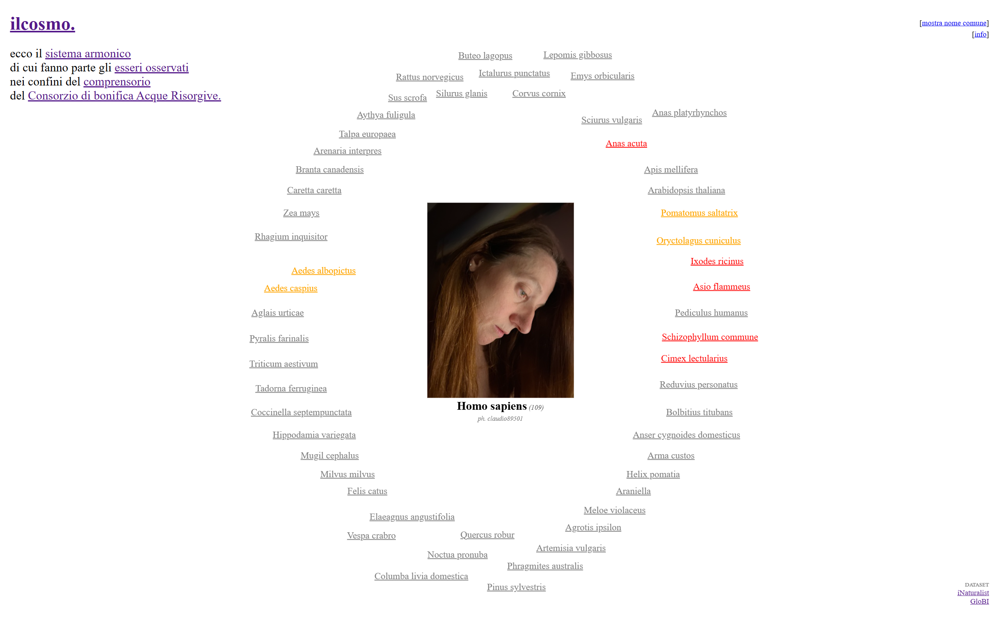
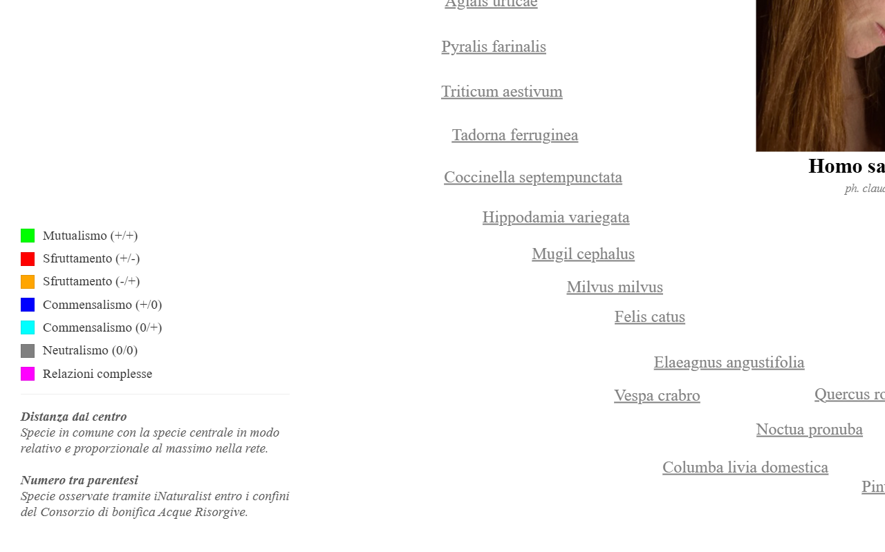
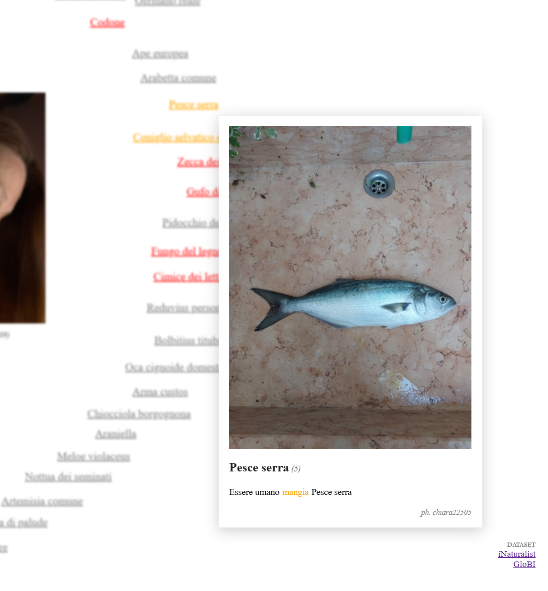
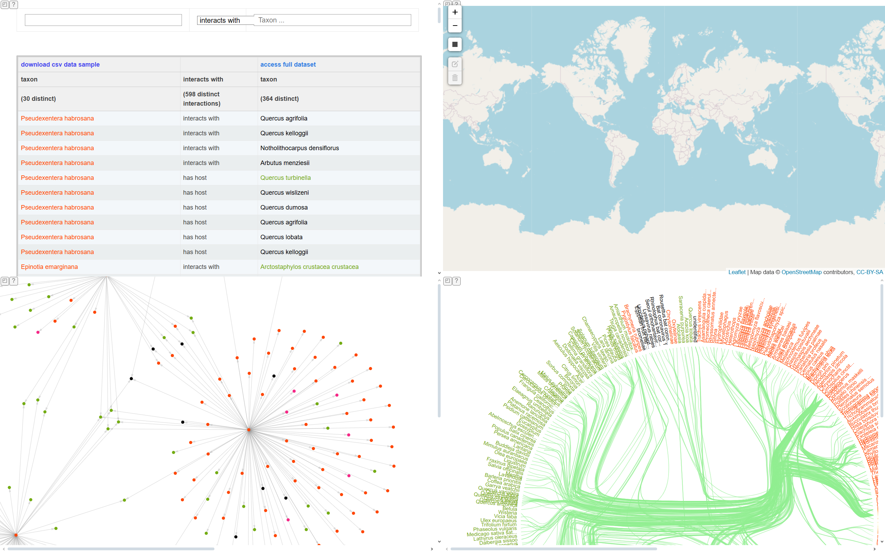
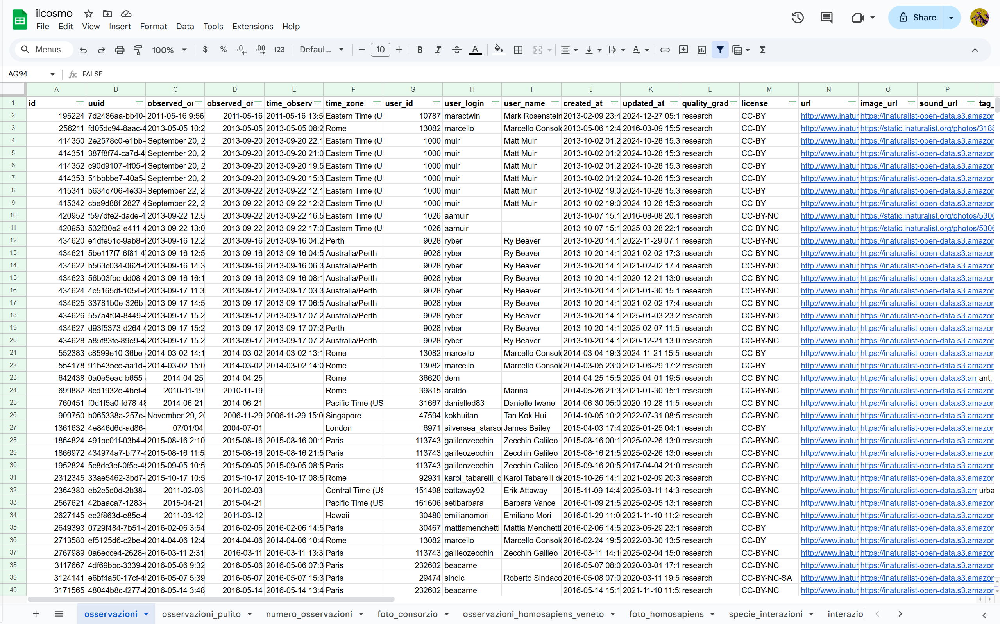

tiriamo le fila
> data physicalization
> interactive installation
> prototyping
> guerrilla communication
Tiriamo le fila is an interactive, site-specific installation that makes tangible the network of interconnections between some of the species found in the area of the Acque Risorgive Reclamation Consortium.
This network becomes a tool for conversation between the two banks of the Marzenego canal, with the aim of revealing the complexity and balance of the ecosystems that surround us. The installation invites reflection on coexistence within a system where every element is essential, but none is central — like in an orchestra, where harmony arises from the ongoing relationship between the parts.
Mestre is, in itself, a living network of crossings, exchanges, and contrasts. A city that more than others tells the story of what it means to live among differences, histories, urban rhythms, and natural presences — often invisible, yet resilient. The chosen location — the stretch of the Marzenego between Via Poerio and Riviera XX Settembre — is a threshold crossed every day: a liminal space between the distracted flow of the city and an environment that, if re- listened to, can become alive again.
The installation emerged from a series of reflections on ecoacoustics, our relationship with water, and the interactions between species.
By exploring the soundscape, we focused on how it is largely made up of invisible signals: sounds produced by often hidden organisms, which tell us much about a place's biodiversity.
Water, a central element in the Venetian territory, led us to consider its quality not only as a physical resource, but as an indicator of the health of an entire ecosystem.
Exploring species interactions brought us to imagine life as a web of interdependent ties, where every action creates connections and contributes to shaping the ecological balance in which we are immersed.
To build this network, we started from real data: the represented species are not symbolic, but actually present along the Marzenego, identified through observations published on iNaturalist, a citizen science platform that actively involves people in biodiversity monitoring.
The ecological relationships were reconstructed thanks to GloBI — Global Biotic Interactions, a collaborative archive that aggregates scientific data on species interactions at a global scale.
To make the network not only visible but also perceivable, we turned to sound. Each species is associated with a voice, selected from recordings on Xeno-canto, the world's largest platform dedicated to natural sounds. This soundscape is an invitation to active listening and care: through the voices of species, we can recognize other forms of life that share our spaces.
The network was initially designed in Gephi and later adapted to the installation site using CAD software. Each species is represented by a paracord rope; the interactions are made visible through metal rings connecting the nodes, transforming ecological data into a tangible physical structure.
The installation is made interactive through an electronic system composed of Arduino, piezoelectric sensors, DFPlayer Mini modules, speakers, and autonomous power supply.
The installation received an extremely positive response, both for its physical presence in the urban space — particularly for the estrangement effect created by the suspended network, perceived as an unexpected visual element — and for the interactive mode it employed, capable of engaging visitors actively.
The action, guerrilla-style in nature, took shape through the overnight assembly of the network on the eve of the event, without prior announcements or signage. This choice strengthened the perception of the work as a foreign body in the urban landscape, generating surprise and curiosity among passersby from the early hours of the morning.
On several occasions, spontaneous forms of collective dialogue emerged: participants openly discussed the themes raised by the intervention — from the re-emergence of the canal as a symbolic and vital element, to the often invisible biological presence, and the need for a more attentive ecological gaze within the city.
These moments of shared reflection represented a valuable outcome, confirming the communicative and relational strength of the work.




